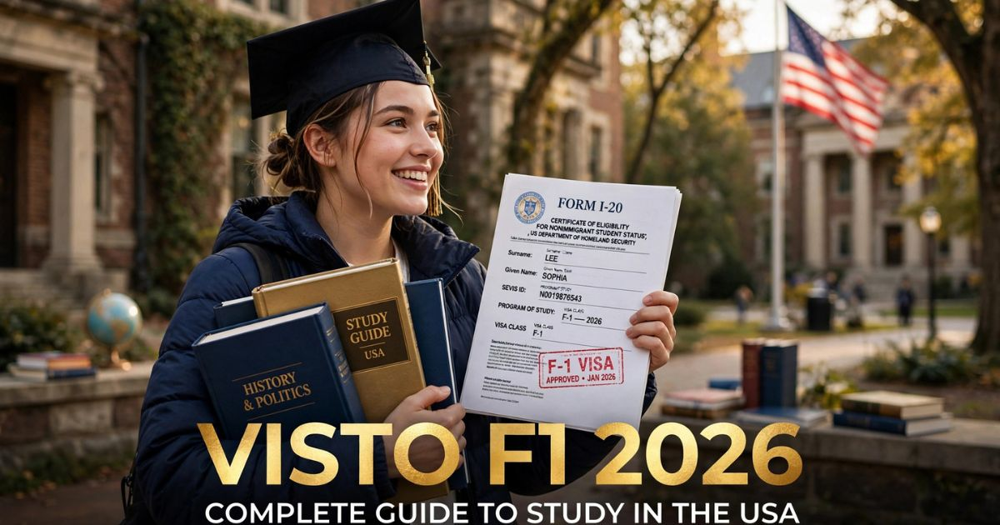

Visto de Estudante F1 2026: guia completo para estudar nos Estados Unidos
Introdução: o sonho de estudar nos Estados Unidos
Estudar nos Estados Unidos é o sonho de milhões de estudantes ao redor do mundo — e os brasileiros não são exceção. Com algumas das melhores universidades do planeta, uma cultura acadêmica inovadora e oportunidades únicas de desenvolvimento pessoal e profissional, os EUA atraem estudantes de todos os cantos do globo. No entanto, antes de embarcar nessa jornada, é necessário obter o visto de estudante F1 — o documento que permite que você estude legalmente no país.
Em 2026, o processo de solicitação do visto F1 continua sendo detalhado e rigoroso, mas com algumas atualizações importantes. A digitalização do processo, a exigência do pagamento da taxa SEVIS, a comprovação de capacidade financeira e a entrevista no consulado são alguns dos pontos que todo estudante precisa conhecer antes de iniciar a jornada.
Neste guia completo sobre o visto de estudante F1, você vai encontrar tudo o que precisa saber para solicitar o visto com sucesso: o que é o visto F1, quem precisa, os requisitos básicos, a documentação necessária, o passo a passo da solicitação, dicas para a entrevista, os valores atualizados e respostas para as principais dúvidas dos estudantes brasileiros.
Nosso objetivo é desmistificar o processo e mostrar que, com organização e as informações corretas, obter o visto F1 é perfeitamente possível. Afinal, o sonho de estudar nos Estados Unidos começa com o primeiro passo — e esse passo é o visto.
O que é o visto de estudante F1
O visto F1 é a categoria de visto mais comum para estudantes internacionais que desejam cursar programas acadêmicos nos Estados Unidos. Ele é emitido pelo governo americano e permite que estudantes estrangeiros frequentem instituições de ensino credenciadas no país.
Características principais do visto F1:
- Estudos acadêmicos: Permite cursar programas de ensino superior (undergraduate), pós-graduação (graduate), cursos de idiomas (ESL) e programas de intercâmbio acadêmico.
- Duração: Válido por todo o período do curso, com possibilidade de extensão para treinamento prático (OPT) após a conclusão.
- Trabalho: Permite trabalho dentro do campus universitário por até 20 horas semanais durante o período letivo e 40 horas durante as férias.
- Dependentes: Cônjuges e filhos menores de idade podem obter o visto F2 para acompanhar o estudante.
- Obrigatoriedade: É necessário manter matrícula ativa e progresso acadêmico satisfatório para manter o visto válido.
Visto F1 vs. Visto J1: É importante não confundir o visto F1 com o visto J1. Enquanto o F1 é para estudantes acadêmicos em instituições de ensino, o J1 é para participantes de programas de intercâmbio cultural, como Au Pair, Work and Travel e estágios supervisionados.

O visto F1 é o documento essencial para estudar nos Estados Unidos
Quem precisa do visto F1
O visto F1 é necessário para todos os estudantes estrangeiros que desejam cursar programas acadêmicos presenciais nos Estados Unidos. No entanto, existem algumas exceções e particularidades que você precisa conhecer:
Quando o visto F1 é obrigatório:
- Estudantes de graduação: Quem deseja cursar bacharelado, licenciatura ou tecnólogo em instituições americanas.
- Estudantes de pós-graduação: Quem deseja cursar mestrado, doutorado ou especialização.
- Cursos de idiomas: Quem deseja fazer cursos intensivos de inglês (ESL) com carga horária superior a 18 horas semanais.
- Intercâmbio acadêmico: Quem participa de programas de intercâmbio com duração superior a 90 dias.
- Estudantes de escolas de ensino médio: Quem deseja cursar o high school nos EUA (visto F1 específico para menores).
Quando NÃO é necessário o visto F1:
- Cursos de curta duração: Cursos com duração inferior a 90 dias (como workshops, conferências, cursos de verão) podem ser feitos com visto de turista B2.
- Programas de intercâmbio J1: Programas como Work and Travel, Au Pair e estágios supervisionados utilizam o visto J1.
- Estudos online: Cursos totalmente online não requerem visto F1.
- Dupla cidadania: Cidadãos americanos ou com green card não precisam de visto.
Importante: Para obter o visto F1, você precisa ser aceito por uma instituição de ensino credenciada pelo SEVP (Student and Exchange Visitor Program) e receber o formulário I-20, que é o documento oficial que comprova sua elegibilidade para o visto.
Requisitos básicos para o visto F1
Para solicitar o visto F1, você precisa atender a uma série de requisitos estabelecidos pelo governo americano. Conheça cada um deles:
1. Aceitação em instituição credenciada — Você deve ser aceito por uma instituição de ensino americana que participe do programa SEVP. A instituição emitirá o formulário I-20, que é o documento mais importante para a solicitação do visto.
2. Proficiência em inglês — A maioria das instituições exige comprovação de proficiência em inglês, geralmente por meio de testes como TOEFL, IELTS ou Duolingo English Test. Cada instituição tem seus próprios requisitos mínimos.
3. Capacidade financeira — Você precisa comprovar que tem recursos financeiros suficientes para cobrir as despesas com mensalidades, moradia, alimentação, transporte e outros custos durante todo o período do curso. O valor varia conforme a instituição e a localização.
4. Vínculos com o Brasil — Assim como no visto de turismo, é importante demonstrar que você tem vínculos fortes com o Brasil e que pretende retornar após a conclusão dos estudos. Isso inclui família, patrimônio, negócios ou oportunidades profissionais.
5. Intenção de retorno — O visto F1 é um visto de não-imigrante, o que significa que você deve comprovar que pretende retornar ao Brasil após a conclusão do curso.
6. Passaporte válido — Seu passaporte deve ser válido por pelo menos 6 meses após a data prevista de retorno ao Brasil.
Documentos necessários para o visto F1
A documentação para o visto F1 é mais extensa do que para o visto de turismo, mas seguindo a lista com atenção, você conseguirá reunir tudo com tranquilidade.
Documentos obrigatórios:
- Passaporte válido — com validade mínima de 6 meses após a data de retorno.
- Formulário I-20 — emitido pela instituição de ensino americana. Este é o documento mais importante de todo o processo.
- Formulário DS-160 — preenchido online, com a confirmação impressa.
- Comprovante de pagamento da taxa SEVIS I-901 — pagamento obrigatório de US$ 350 para o sistema SEVIS.
- Comprovante de pagamento da taxa MRV — taxa para solicitação do visto (US$ 160).
- Foto 5x7 — recente, com fundo branco, seguindo as especificações do Departamento de Estado.
- Comprovante de agendamento — da entrevista no consulado.
Documentos complementares:
- Comprovantes financeiros — extratos bancários, declaração de imposto de renda, cartas de patrocínio, comprovantes de investimentos.
- Comprovante de matrícula — ou carta de aceitação da instituição de ensino.
- Diplomas e certificados — comprovando sua formação acadêmica anterior.
- Resultados de testes de proficiência — TOEFL, IELTS, Duolingo ou outros exigidos pela instituição.
- Curriculum vitae — detalhando sua trajetória acadêmica e profissional.
- Comprovantes de vínculo com o Brasil — carteira de trabalho, imóveis, negócios, etc.
- Carta de intenção — explicando por que você escolheu o curso e a instituição, e seus planos para o futuro.
Passo a passo da solicitação do visto F1
O processo de solicitação do visto F1 é dividido em várias etapas. Siga este passo a passo com cuidado para não perder nenhum detalhe:
- Pesquise e escolha a instituição — Pesquise universidades, colleges ou programas de intercâmbio que atendam aos seus objetivos acadêmicos e financeiros. Verifique se a instituição é credenciada pelo SEVP.
- Candidate-se e seja aceito — Envie sua candidatura para a instituição escolhida, incluindo todos os documentos exigidos (histórico escolar, testes de proficiência, cartas de recomendação, etc.). Aguarde a carta de aceitação.
- Receba o formulário I-20 — Após a aceitação, a instituição emitirá o formulário I-20. Você precisará pagar a taxa SEVIS e assinar o documento.
- Preencha o DS-160 — Acesse o site do Departamento de Estado (ceac.state.gov) e preencha o formulário DS-160 com todas as informações solicitadas.
- Pague a taxa SEVIS — Acesse o site do SEVIS e pague a taxa de US$ 350. Guarde o comprovante de pagamento.
- Pague a taxa MRV — Efetue o pagamento da taxa de solicitação do visto (US$ 160) no site da CASV.
- Agende a entrevista — Agende a entrevista no consulado ou embaixada americana mais próxima. Em períodos de alta demanda, o agendamento pode levar semanas.
- Reúna a documentação — Organize todos os documentos listados anteriormente em uma pasta.
- Compareça à CASV — Antes da entrevista, você deverá comparecer à CASV para coleta de dados biométricos.
- Participe da entrevista — Compareça ao consulado na data agendada para a entrevista com o oficial consular.
- Aguarde a aprovação — O prazo para análise do visto varia, mas geralmente é de 3 a 10 dias úteis.
- Retire o visto — Se aprovado, o visto será carimbado no passaporte. A retirada pode ser feita pessoalmente ou pelos Correios.
Entrevista no consulado: como se preparar
A entrevista para o visto F1 é um dos momentos mais importantes do processo. O oficial consular avaliará sua documentação, suas intenções e sua capacidade financeira para estudar nos Estados Unidos.
Perguntas típicas da entrevista:
- "Por que você escolheu estudar nos Estados Unidos?"
- "Por que você escolheu esta universidade/curso?"
- "O que você pretende fazer após concluir o curso?"
- "Quem vai custear seus estudos?"
- "O que você faz atualmente no Brasil?"
- "Você tem vínculos com o Brasil?"
Dicas para a entrevista:
- Seja honesto — Mentir no processo é motivo para negativa e pode impedir futuras solicitações.
- Mostre seus vínculos com o Brasil — Demonstre que você tem razões para retornar após os estudos.
- Conheça sua instituição — Saiba detalhes sobre a universidade, o curso e a cidade onde você vai estudar.
- Esteja preparado para falar sobre seu plano de carreira — Mostre que o curso faz parte de um projeto de vida.
- Mantenha a calma e a confiança — A ansiedade é normal, mas a preparação adequada ajuda a controlá-la.
- Responda de forma objetiva — Seja claro e direto nas respostas.
Valores e taxas do visto F1 em 2026
Os custos para obter o visto F1 incluem diversas taxas e despesas que devem ser consideradas no planejamento financeiro. Confira os valores atualizados para 2026:
| Serviço | Valor (US$) | Valor aproximado (R$)* |
|---|---|---|
| Taxa SEVIS I-901 | US$ 350,00 | ~ R$ 1.925,00 |
| Taxa de solicitação (MRV) - F1 | US$ 160,00 | ~ R$ 880,00 |
| Taxa de agendamento (terceirizada) | ~ US$ 20-30 | ~ R$ 110-165 |
| Entrega do visto pelos Correios | ~ US$ 25,00 | ~ R$ 138,00 |
*Valores aproximados com base no câmbio de julho de 2026 (US$ 1,00 ≈ R$ 5,50).
Total estimado: Aproximadamente R$ 3.000 a R$ 3.200 (incluindo taxa SEVIS, taxa MRV, agendamento e entrega).
+ Mensalidades e custos de vida: Além das taxas do visto, você precisará comprovar capacidade financeira para cobrir mensalidades e despesas durante todo o período do curso. Os valores variam conforme a instituição e a localização.
Prazos e validade do visto F1
Os prazos para obtenção do visto F1 são geralmente mais longos que os do visto de turismo, devido à complexidade do processo e à análise mais detalhada.
Prazos médios em 2026:
- Agendamento: de 2 a 8 semanas (dependendo do consulado).
- Análise do visto: de 5 a 15 dias úteis após a entrevista.
- Emissão do visto: de 3 a 10 dias úteis após a aprovação.
Validade do visto F1:
- Duração: Válido por todo o período do curso (conforme indicado no I-20).
- Período de graça (grace period): Após a conclusão do curso, o estudante tem 60 dias para permanecer nos EUA ou solicitar mudança de status.
- OPT (Optional Practical Training): Permite que o estudante trabalhe nos EUA por até 12 meses após a conclusão do curso.
- STEM OPT: Para cursos das áreas de Ciência, Tecnologia, Engenharia e Matemática, é possível estender o OPT por mais 24 meses.
Dicas para aumentar suas chances de aprovação
- Comece o processo com antecedência — O processo pode levar meses. Inicie a pesquisa e a preparação com pelo menos 6 meses de antecedência do início das aulas.
- Escolha a instituição certa — Pesquise bem a instituição, o curso e a localização. O oficial consular avaliará sua escolha.
- Prepare-se financeiramente — Tenha documentação financeira robusta que comprove sua capacidade de custear os estudos.
- Seja honesto sobre suas intenções — O visto F1 é para estudar, não para imigrar. Seja claro sobre seus planos de retorno ao Brasil.
- Conheça a fundo o curso e a instituição — Demonstre que você fez uma escolha consciente e bem planejada.
- Organize sua documentação — Tenha todos os documentos em ordem e em uma pasta organizada.
- Pratique a entrevista — Simule perguntas e respostas com um amigo ou familiar.
- Consulte um especialista — Se tiver dúvidas, considere consultar um agente de intercâmbio ou advogado de imigração.
O visto F1 é um dos processos mais detalhados e importantes para quem sonha em estudar nos Estados Unidos. A chave para o sucesso está na preparação e na honestidade. Pesquise bem a instituição, organize sua documentação financeira, seja claro sobre seus planos de retorno ao Brasil e esteja preparado para a entrevista. Com planejamento e dedicação, seu sonho de estudar nos EUA está mais perto do que você imagina!
❓ Perguntas Frequentes sobre o visto F1
Não. Ser aceito pela instituição não garante a aprovação do visto. O oficial consular avalia diversos fatores, incluindo capacidade financeira, vínculos com o Brasil e intenção de retorno. A aprovação do visto é uma decisão separada da aceitação acadêmica.
Em média, o processo completo pode levar de 3 a 6 meses, incluindo a preparação da documentação, agendamento, entrevista e emissão do visto. Recomenda-se iniciar o processo com pelo menos 6 meses de antecedência.
Sim, mas com restrições. O visto F1 permite trabalho dentro do campus universitário por até 20 horas semanais durante o período letivo e 40 horas durante as férias. Fora do campus, o trabalho só é permitido em casos específicos (como OPT) ou com autorização prévia do governo.
O custo total para o visto F1 em 2026 é de aproximadamente R$ 3.000 a R$ 3.200, incluindo a taxa SEVIS (US$ 350), taxa MRV (US$ 160), taxa de agendamento e entrega. Além disso, você precisará comprovar capacidade financeira para cobrir mensalidades e custos de vida.
Sim. Cônjuges e filhos menores de 21 anos podem solicitar o visto F2 para acompanhar o estudante. Eles não podem trabalhar, mas podem estudar em tempo parcial. É importante comprovar capacidade financeira para sustentar a família durante o período de estudos.
A taxa SEVIS (Student and Exchange Visitor Information System) é um pagamento obrigatório de US$ 350 para estudantes F1. Ela financia o sistema que monitora estudantes internacionais nos EUA e deve ser paga antes da entrevista no consulado.
Se seu visto for negado, você pode tentar novamente a qualquer momento. É importante identificar o motivo da negativa (geralmente informado pelo oficial) e corrigir as questões apontadas. Em alguns casos, pode ser necessário apresentar novos documentos ou demonstrar vínculos mais fortes com o Brasil.
Sim, dentro do período de graça (grace period) de 60 dias após a conclusão do curso. Durante esse período, você pode solicitar mudança de status, iniciar o OPT (Optional Practical Training) ou se preparar para retornar ao Brasil. Para permanecer além desse período, é necessário solicitar outro visto ou status.